A hidden-identity trading game for 3–8 friends, played in the browser over Discord. Named for Janus, the two-faced Roman god:
everyone shows the table one face and plays the board with another.
👥 3–8 players (best at 4–5)⏱️ about 35 minutes🔁 6 rounds🌐 browser + Discord voice
Everything you do by day is public and signed with your name: trades, sales, Tribunal votes.
Your card count is public (not which cards). It updates once a day, at dawn.
🎭
🌙 The face you hide
You secretly rule one city on the map, and belong to a secret faction.
Everything you do at night is reported by city, never by name.
Your job: work out who rules which city by matching the two faces.
Part 1
How the game works now
Everything below describes the live build. Numbers are the current playtest values and are easy to change.
1 · Setup
Factions, cities and setup
Each player is dealt a secret city and a secret faction. Cities nobody rules are run by simple
bots, so even a small group has plenty of cities to puzzle over.
🔴 The Syndicate
How many
1 player (2 with 6 or more)
Knows
Every Syndicate member's city
Wins
If any Syndicate member is still unexposed at the end of round 6
Extras
Black market, kidnapping and hired security, all exclusive
🔵 The Concord
How many
Everyone else
Knows
Nothing, or one trusted partner's city (5+ players)
Wins
As soon as every Syndicate member has been exposed
Extras
Numbers and the Tribunal
🟡 Free Trader is a title, not a faction. Anyone, Syndicate or Concord, whose city reaches 7 supply lines
earns it at the end of that night. It is secret (only the holder is told) and grants a secret veto at the Tribunal. A big
trade network is expensive and visible on the map, so whoever builds one starts to look like the Syndicate.
Player counts
Players
Syndicate
Concord
Cities on the map
Concord pairs who know each other
3
1
2
6
0
4
1
3
6
0
5
1
4
7
1
6
2
4
7
1
7
2
5
8
2
8
2
6
8
2
Cities and resources
Each city has 3 tiles, so it produces exactly 3 of the 7 resources. Everyone can see which 3.
🗽 New York💂 London🗼 Paris🏖️ Rio🏯 Tokyo🐪 Cairo🏛️ Rome🦘 Sydney
🌾 Grain🪵 Timber⛏️ Ore🐑 Wool🪨 Stone🔥 Coal🧵 Silk
You start with 2 of each of your city's resources and 15 gold.
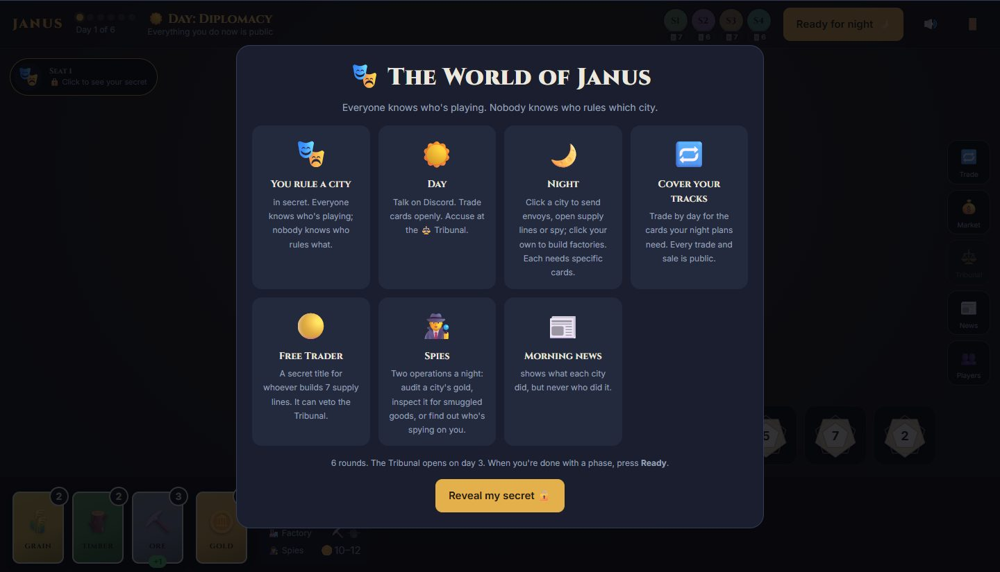
First visit: a four-picture how-to-play.
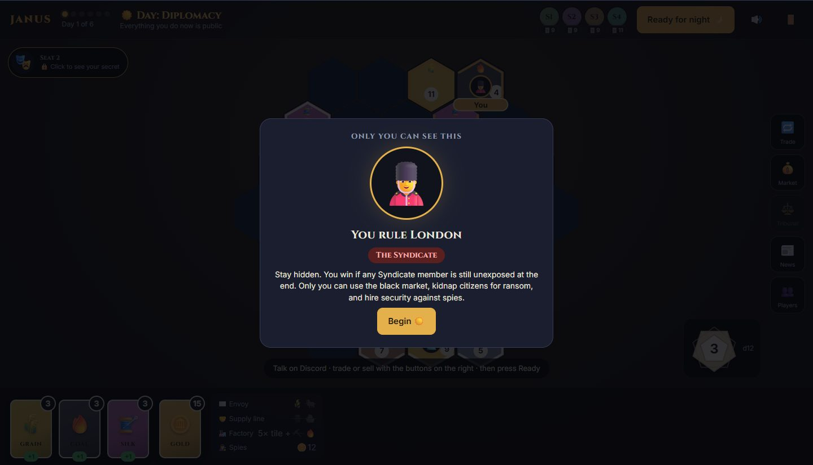
Then your secret: your city and faction. Only you see this.
2 · Rounds
A round, step by step
🎲HarvestThree 12-sided dice pick which tiles produce.Automatic
☀️DayTalk on Discord. Trade, sell, enter the Tribunal.Public, by name
⚖️DuskThe Tribunal rules, if it sat (from day 3).Public
🌙NightEnvoys, supply lines, factories, spies, Syndicate schemes.Secret, by city
📰Morning newsEveryone gets the newspaper: what each city did.Public, no names
↻ repeat for 6 rounds · each phase ends when every player presses Ready
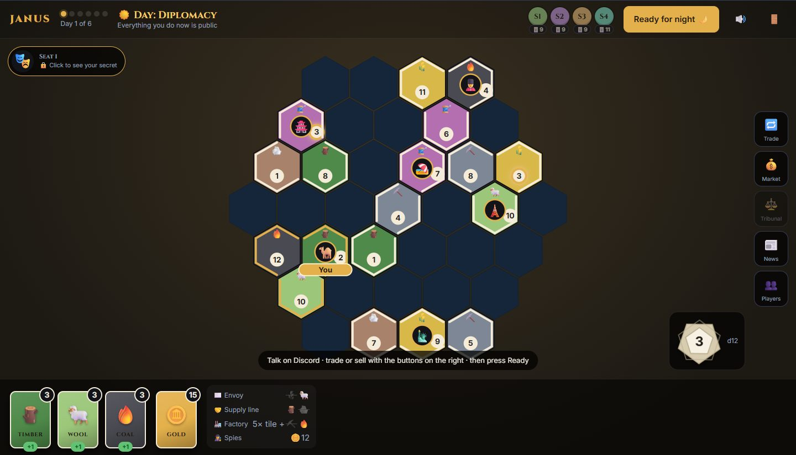
The board by day. The map fills the screen; your cards sit along the bottom, the morning's d12 in the corner, and Trade, Market, Tribunal, News and Players on the right.3 · Day
Day: trading, the market, the Tribunal
Everything you do by day is public and signed with your name.
Action
Cost
What happens
Who sees it
🔁 Trade
Free
Offer any of your cards to another player for cards of theirs. They accept or decline.
Everyone, by name
💰 Sell
—
Sell a card at the market for its current price in gold.
Everyone, including the gold earned
⚖️ Tribunal
🪙 4 to enter
From day 3: enter, then vote to expose a suspect. Details.
Day trades are free one-off swaps between players. They are a different thing from supply lines, the
permanent links between cities opened at night.
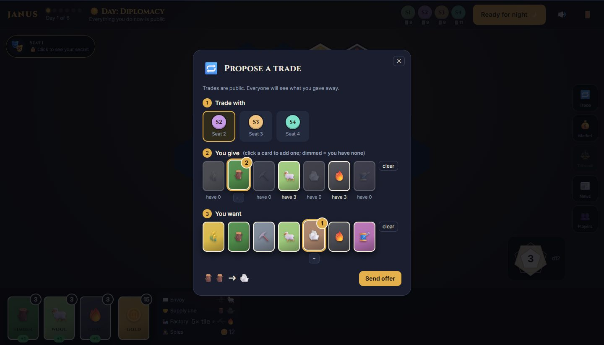
Trading: pick a player, click the cards you'll give (you hold the bright ones), click what you want.
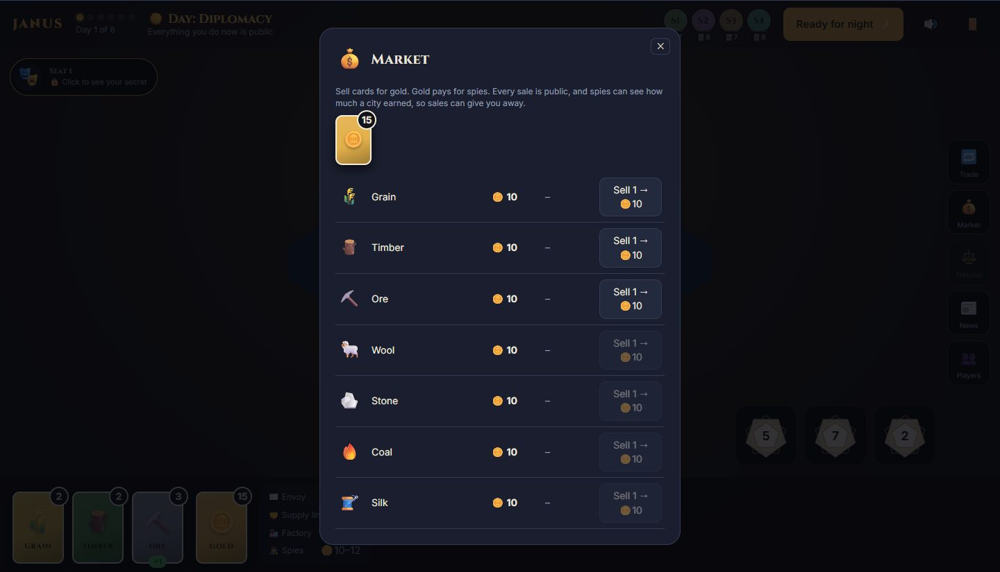
The market: whole-number prices, last night's moves, and one-click selling.
4 · Night
Night: actions under the table
Click a city on the map to act on it, or click your own city to build. Most actions need specific cards, so most players
must trade publicly by day to act at night. That trading is how identities leak.
Action
Cost
Effect
Who
✉️ Envoy
🌾 + 🐑 + travel
Ask another city to connect. If they accept, you're connected and they alone learn who sent it. Unanswered envoys expire after a day and a night.
Everyone
🤝 Supply line
🪵 + 🪨 + travel
Pick a good on a connection. From then on, whenever either city produces it, the other gets 1 too. Max 2 per connection.
Everyone
🏭 Factory
⛏️ + 🔥
Built on one of your own tiles: +1 extra each time that tile is rolled. One per tile. Output also flows down supply lines.
Everyone
💰 Treasury audit
🪙 12
A city's total gold received and spent this round. No breakdown, no names: do the maths against the public sales.
Spy op
📦 Customs inspection
🪙 10
Whether a city is holding smuggled goods, and how many.
Spy op
🔎 Counter-intelligence
🪙 8
Which cities send spies to your own city tonight.
Spy op
🕶️ Smuggle / Pump
🪙 market price / 🪙 3
Buy a card into a hidden stash, or push a price up for tomorrow.
Syndicate
🗡️ Kidnap
🪙 15
Seize a citizen of a city by naming its ruler. Right: ransom every dawn. Wrong: you're exposed.
Syndicate
Spy operations: anyone can run up to 2 a night, in any mix. The news reports "spies spotted" in each city
audited or inspected, never who sent them. Travel gold: envoys and supply lines cost 🪙 2 for each hex between the two capitals beyond the first 2, up to about
🪙 8 across the map. Limits: a city can have at most 4 connections.
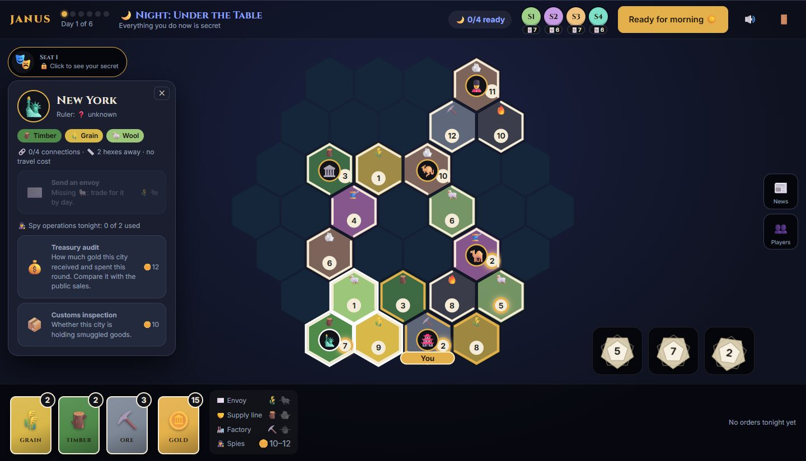
Another city at night: what it produces, distance and travel cost, and your options. Missing cards are crossed out.
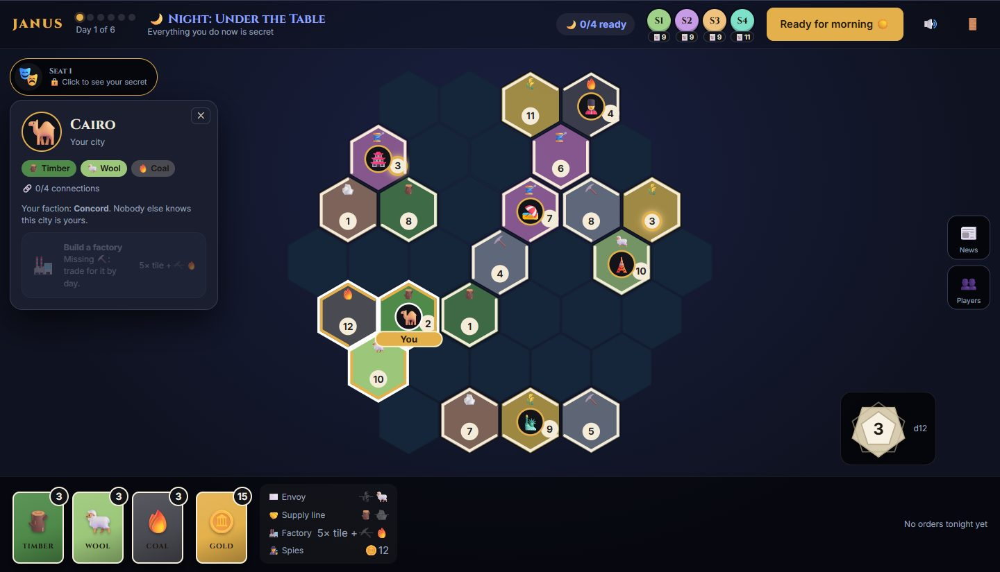
Your own city: build factories here. The legend by your cards shows every recipe.
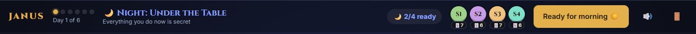
At night nobody sees who is ready, only how many. Otherwise the Syndicate, with more to do, would stand out.5 · The Syndicate's tools
Black market, kidnapping, security
🕶️ Black market (night)
Smuggle a card at its market price, delivered at dawn into your hidden contraband stash. Pump
a resource for 🪙 3 so its price jumps about 25–30% in the morning. The classic scheme: smuggle several of a cheap good, pump it,
then launder and sell next day. In simulations, one card loses a little and 3–4 cards make 🪙 4–6. Selling right after a spike is
public and looks suspicious, though.
🙈
Off the books. Stash cards aren't in your public card count.
🌙
Usable at night. Envoys, supply lines and factories take stash cards first, so your visible hand doesn't shrink.
🔁
Tradable, with a warning. You can slip stash cards into a public trade. They arrive as ordinary goods, so customs finds nothing on the other player. But at dawn your card count won't match what the public record suggests, and sharp players may notice.
🧺
Launder to sell. By day, move stash cards into your hand at the market. Then they're ordinary cards you can sell, and customs can't find them, but your card count at dawn grows with nothing public to explain it.
📦
Customs can find them, unless you hired security that night.
🗡️ Kidnapping (night, one per night)
Pick a city and name the player you think rules it. This gives Concord players a reason to keep their city secret: once the table knows
your city, you're an easy target.
✔ Right guessThat city's ruler pays you 🪙 5 every dawn to keep their citizen safe, starting that dawn. They're told, but not by whom. The news reports "Citizen kidnapped!" with the city only.
✘ Wrong guessIncluding naming a bot city's "ruler". The kidnapper is exposed in the morning newspaper with their name, city and faction, and is tariffed. It counts toward the Concord's win.
The ransom stops when the kidnapper is exposed by any means. A player can only be held by one kidnapper, and the Syndicate can't kidnap its own.
🛡️ Hired security (day or night)
For 🪙 8, any spies sent to your city that night are bribed. A treasury audit leaves out your illegal gold (ransom income, black
market and kidnapping costs, and the security fee itself) but still shows legal sales and spending. A customs inspection reports
"nothing suspicious", exactly as it would for a clean city. Nobody is told security was hired, so a clean report proves nothing.
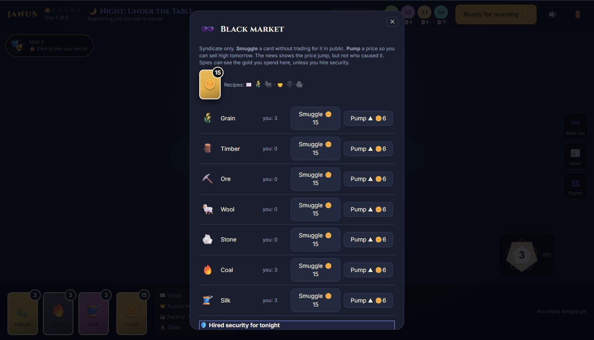
The black market, with security at the bottom.
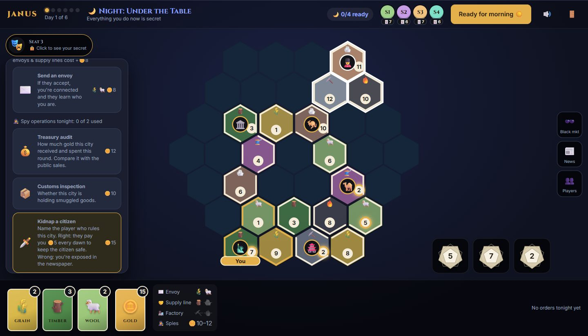
Kidnapping: name the ruler, and read the warning first.
6 · Economy
Harvest, prices and gold
🎲
Three d12. Every dawn three 12-sided dice are rolled. Only tiles showing a rolled number produce: +1 per die that matches. Each number is equally likely, and a city's 3 tiles always have 3 different numbers. A city gets about 0.75 cards a dawn on average, so cards are scarce and every trade matters.
🏭
Factories add +1 more each time their tile is rolled.
🤝
Supply lines then share: if your partner produced a shared good this dawn, you get 1 too.
Prices
Cards start at 10 gold and prices are always whole numbers, so a sale pays exactly the listed price. Each night
prices move on relative supply and demand: a good gets cheaper only if it's more plentiful than the average good (harvested
or sold a lot), and dearer if it's scarcer (spent on recipes, smuggled or pumped). Moves are capped at 30% a night, and prices never drop
below 2.
Gold
You start with 🪙 15. Gold comes from sales (and, for the Syndicate, ransoms). It pays for spies, travel, Tribunal entry, fines, tariffs and the Syndicate's tools, and will matter in War.
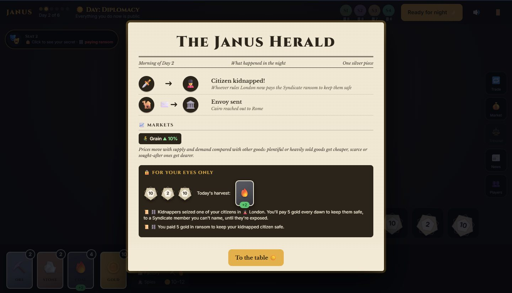
The Janus Herald, which every player sees each morning: headlines by city, market moves, and a "for your eyes only" box with your harvest and private news.7 · The Tribunal
The Tribunal in detail
From day 3, the table can try to expose someone. Taking part costs gold and accusing the wrong person costs more, so guessing is risky.
🏛️
Enter for 🪙 4, or stay out. It only sits at dusk if 3 or more players entered; otherwise every fee is refunded.
☝️
Vote. Only entrants vote, for free, and can change their vote until dusk. Anyone can be accused, entrant or not.
⚖️
Verdict. A majority of entrants exposes the accused: their city is revealed, and by default their faction too. From then on they pay a 🚫 tariff: 🪙 5 on every trade and 25% less from sales.
💸
Wrong person? If the exposed player is innocent, everyone who accused them is fined 🪙 8.
🟡
Veto. A Free Trader inside the Tribunal can secretly arm a veto (🪙 10, refunded if there's no verdict). It strikes down that day's verdict, and the news only says "a secret veto".
Host setting: when creating a room, the host can choose to keep exposed players' factions secret, like Among Us's anonymous ejects. Their city is still revealed.
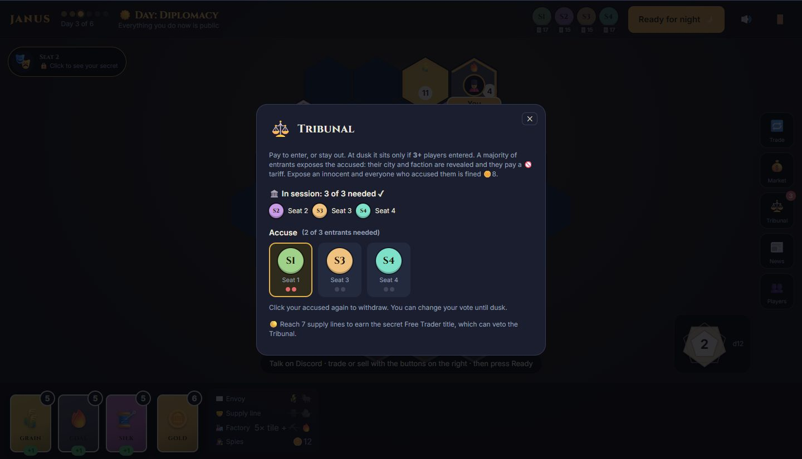
In session: 3 entrants, 2 votes needed.
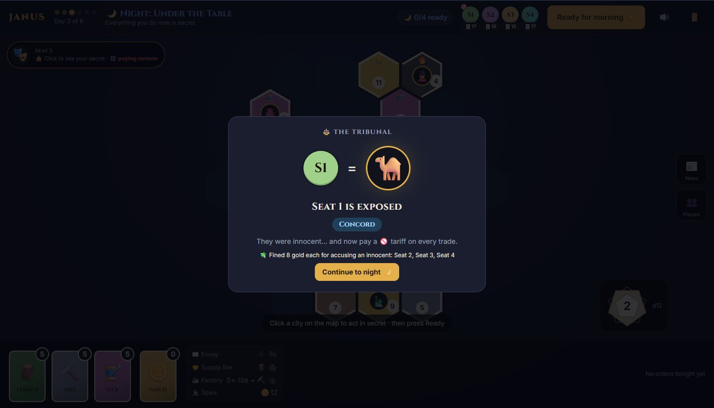
The verdict: an innocent exposed, and their accusers fined.
8 · Deduction
How identities leak
🔁Who needs whatEnvoys need 🌾 + 🐑. Whoever traded for Grain and Wool today probably sent tonight's envoy.
🗺️What a city makesEach city's 3 resources are public. What someone gives away points to a few possible cities.
📦Customs and the diceThe dice and each city's tiles are public, so you can work out what each city harvested. Cards that appear from nowhere may be smuggled.
🕵️Spies vs. sales"Rio received 44 gold" while its ruler only sold 34 in public: the extra gold came from somewhere.
🃏Card countsPublic counts show who's hoarding. They only update at dawn, so a single deal can't be traced in the moment.
📈Market movesOnly the Syndicate can pump prices. A spike nobody can explain is a clue.
🏭Factories and linesBoth show on the map. Whoever suddenly has spare Silk might rule the city with the Silk factory.
✉️Accepted envoysAccepting an envoy tells you, and only you, who sent it.
⚖️The Tribunal and botched kidnapsThese reveal identities to everyone.
9 · Winning
Winning
🔵 Concord winsthe moment every Syndicate member has been exposed, whether by the Tribunal or a botched kidnapping.
🔴 Syndicate winsif any of its members is still unexposed when round 6 ends.
This is the current playtest win condition. War, planned next, will give the Syndicate an active way to win.
10 · Reference
Numbers cheat sheet
6rounds; the Tribunal opens on day 3
15 / 10starting gold / starting card price
3 · +1d12 rolled each dawn · per matching tile
4 · 2max connections per city · supply lines per connection
⛏️🔥factory cost, for +1 each time its tile is rolled
11 · Playing
Hosting a game
1
Open the game, choose Host a game, tick who's playing and choose whether the Tribunal reveals factions.
2
Create room, copy the invite link from the top bar, and paste it in Discord.
3
Friends open the link and pick their name. The host's browser runs the game, so the host keeps that tab open.
🧪
Practice on one screen lets one person play every seat to learn the rules. There are sound effects for big moments (🔊 to mute) and a 🚪 quit button.
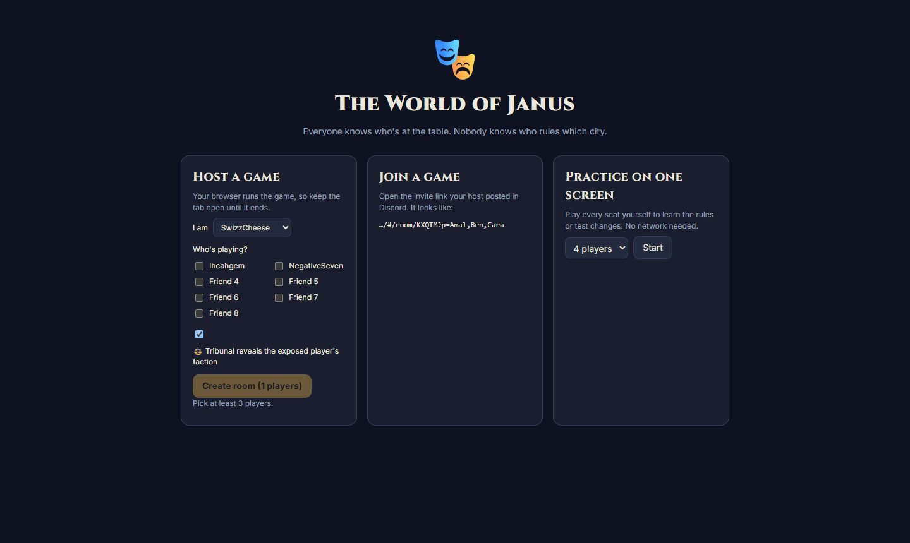
The home screen.
Part 2
What changed so far
The game went from an idea to this build over 19–20 October 2026, shaped by design calls and playtesting.
Changelog, in order
19 Oct · v0.1
First playable: the diplomacy loop
Hex map, harvests, day trading and the market, night envoys, trade links, spies, the morning news and the Tribunal.
Bot cities for small groups; rooms by invite link, hosted free on GitHub Pages with peer-to-peer play.
Started from the idea of Mafia meets Catan-style trading: everyone known at the table, nobody known on the board.
19 Oct
A simpler, visual interface
Map fills the screen; cards along the bottom; dice in the corner; menus behind icon buttons.
Full-screen morning newspaper for everyone; pop-ups for envoys and trade offers; first-visit how-to-play.
Your secret hidden behind a click, safe for Discord screen sharing.
The first version was too text-heavy to learn.
19 Oct
World cities, recipes and the black market
Animal nations became world cities.
Night actions need specific cards (🌾 + 🐑, 🪵 + 🪨), so trading becomes cover for what you do at night.
Black market (smuggle, pump prices), limits on connections, public card counts, sound effects, a quit button.
Before this, trading had no purpose because any cards paid for anything.
19 Oct
The Syndicate, treasury spies and fairer prices
Iron Pact renamed The Syndicate; the black market became Syndicate-only.
Spies read a city's gold instead of revealing its ruler, so identity comes from matching it to public sales.
Prices move relative to other goods; whole-number gold fixed sales paying less than the listed price.
Personas dropped in favour of player names; middle-mouse drag pans the map.
19 Oct
Distance, the paid Tribunal and the Free Trader title
Far-away cities cost travel gold.
Tribunal: entry fee, needs 3 entrants, majority of entrants, fines for exposing an innocent, tariffs on the exposed, host setting for anonymous exposure.
Free Trader went from a faction to a secret title (7 supply lines) with a Tribunal veto.
An innocent exposure used to end the game; now it handicaps instead, and guessing costs gold.
19 Oct
One 12-sided die
Two six-sided dice replaced by one d12, so no city is stuck with unlikely numbers.
19 Oct
Kidnapping and hired security
The Syndicate can kidnap a citizen for ransom; a wrong guess exposes them in the paper.
Spy reports show totals only; the Syndicate can hire security to hide illegal gold from spies.
Trade picker fixed so the cards you hold stay bright.
Gives everyone a reason to keep their city hidden instead of announcing it.
19–20 Oct
Supply lines, factories and secret readiness
"Trade routes" renamed supply lines to avoid confusion with day trades.
Factories on your own tiles: +1 of that resource every dawn, costing 5 of it plus Ore and Coal.
At night, only the number of ready players is shown.
20 Oct · after the first feedback
Scarcer harvests, a contraband stash and spy operations
Harvest: three d12 each dawn, and only rolled tiles produce (+1 per hit). There's no more free income.
Factories now pay +1 when their tile is rolled and cost just Ore + Coal. A simulation showed anything pricier never pays back in 6 rounds.
Contraband stash: smuggled cards are hidden from the card count and can be traded as ordinary goods, with a risk warning.
Card counts now update only at dawn.
Spy operations: up to 2 a night, choosing from treasury audit, customs inspection and counter-intelligence.
Playtesters found resources too plentiful to track, and card counts gave smugglers away.
Your input
Open questions for playtesters
These are undecided. Tell the group what you think about any of them.
Envoy reveals. Accepting an envoy tells you who sent it. Should identity come only from trading and the Tribunal instead?
Ransom strength. 🪙 5 a dawn with no cap can bankrupt a player. Cap it, or limit how long it lasts?
Silk has no use. A simulation shows Silk is worth the least: no recipe needs it. Should it be a wildcard, pay for spycraft, or sell at a premium?
Factories. They now cost only Ore + Coal and barely pay back over 6 rounds. Should they pay +2 per hit, or should games run longer?
Free Trader perks. Should the title do more than the veto: a discount, income, or counting toward a win?
Three-player Tribunal. With 3 players, all three must enter, so anyone can block it. Is that okay?
The economy. At about 0.75 cards a dawn, is it tight in a fun way, or too slow? (+2 per hit is an easy switch.)
A passive Syndicate. Until War, the Syndicate wins by staying hidden. Do they have enough to do?
Roadmap
What's next
⚔️WarWeapons, forts and attacks, with gold paying for armies. Gives the Syndicate an active way to win.
🏳️Nobody sits outA conquered player becomes a government in exile: still in the game and still winning with their faction.
⏲️Quality of lifePhase timers, and reconnecting if the host's tab drops.